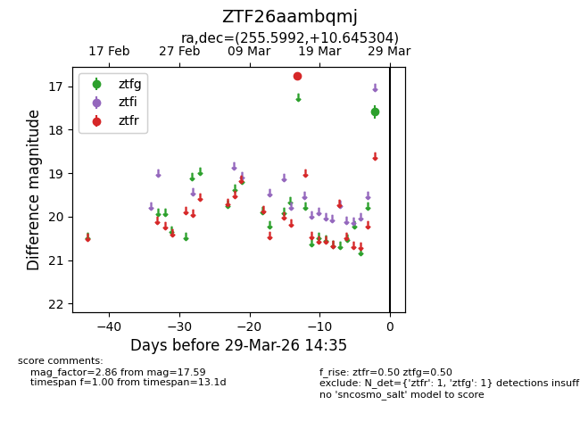
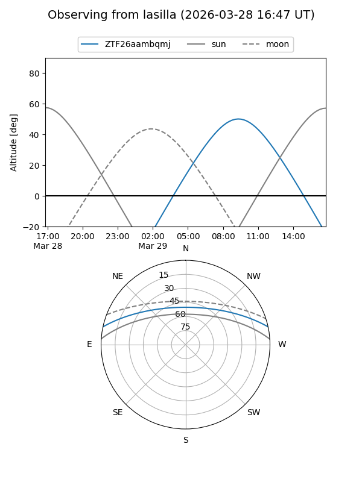
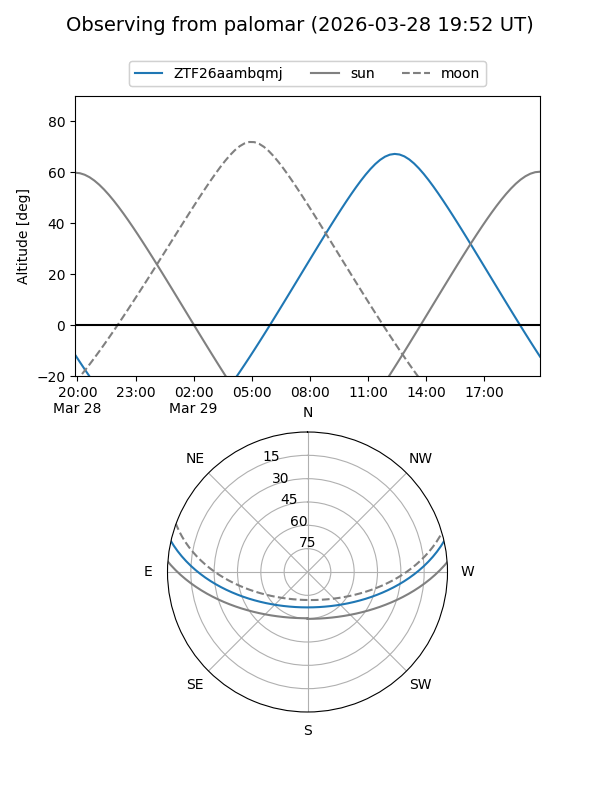

ZTF26aambqmj
Target ZTF26aambqmj at 2026-03-29 14:38
Aliases and brokers:
FINK: link
Lasair: link
ALeRCE: link
alt names
ZTF26aambqmj (ztf,fink_ztf)
Coordinates:
equatorial (ra, dec) = 255.5992,+10.64530
equatorial (HMS+DMS) = 17:02:23.80,+10:38:43.09
galactic (l, b) = (30.2544,+29.00345)
Flags:
Photometry:
last ztfg=17.59, ztfr=16.75
1 ztfg, 1 ztfr detections
Lightcurve

Visibility


Additional plots